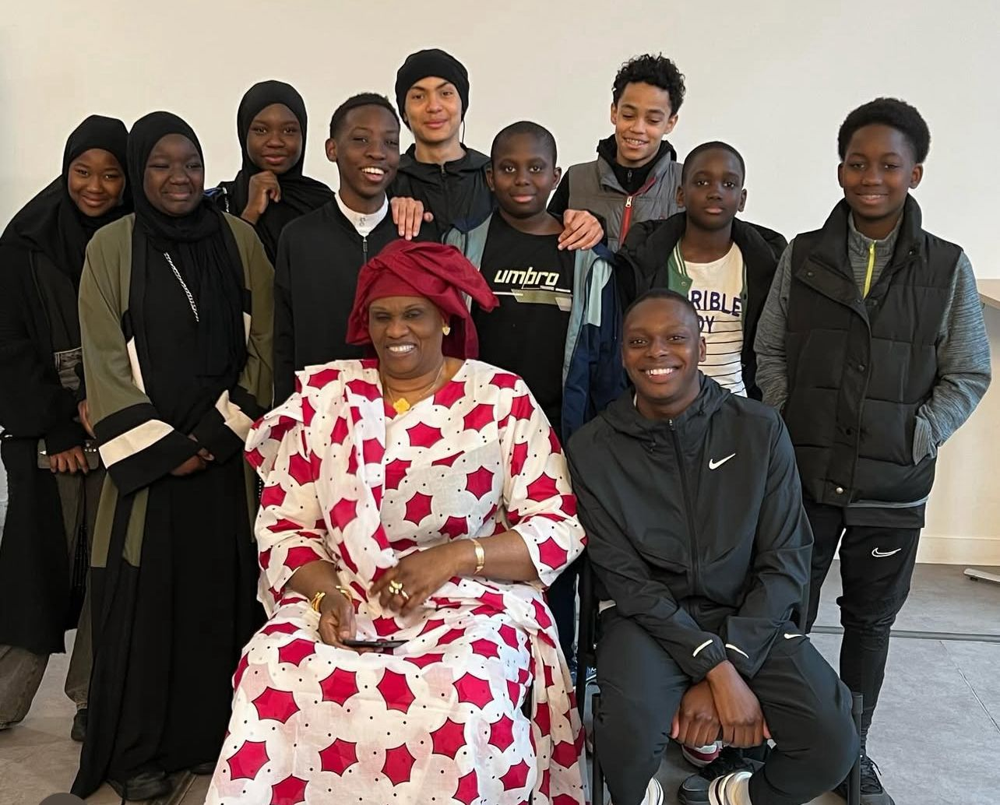
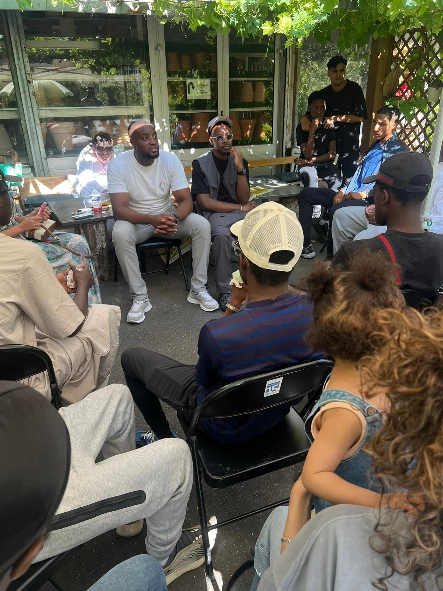
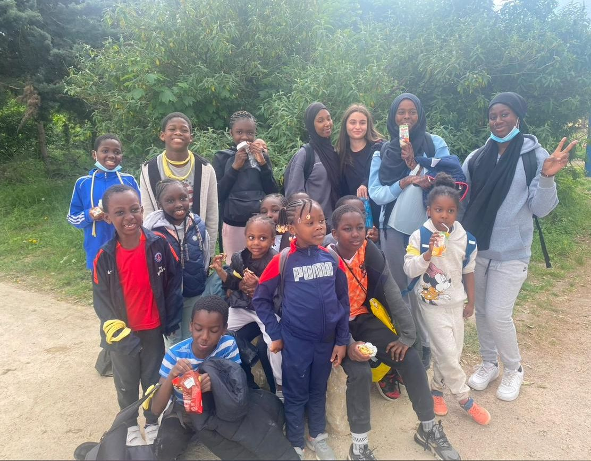

🏢💚 Pôle Action Quartier
“Faire vivre notre quartier, ensemble”
Le pôle Action Quartier représente notre ancrage local et notre volonté de faire rayonner l’Amiral Roussin à travers des actions concrètes, participatives et intergénérationnelles. C’est par lui que nous renforçons le lien social, que nous donnons vie à l’espace public et que nous construisons une communauté soudée et solidaire.
Nos actions principales
- Événements de quartier : fêtes de rue, barbecues, animations sportives et culturelles pour créer du lien et valoriser les talents locaux.
- Journées intergénérationnelles : pour rapprocher les plus jeunes et les aînés autour de moments de partage, de jeux ou d’histoires du quartier.
- Soutien aux familles : organisation d’ateliers avec les mamans du quartier qui nous épaulent activement.
Le quartier en photos



Nos objectifs
- Renforcer le sentiment d’appartenance au quartier.
- Valoriser les initiatives locales et la richesse humaine de notre environnement.
- Redonner une place aux habitants dans l’espace public et les décisions.
- Créer un espace vivant, inclusif et bienveillant, à l’image de la jeunesse qui le fait vivre.